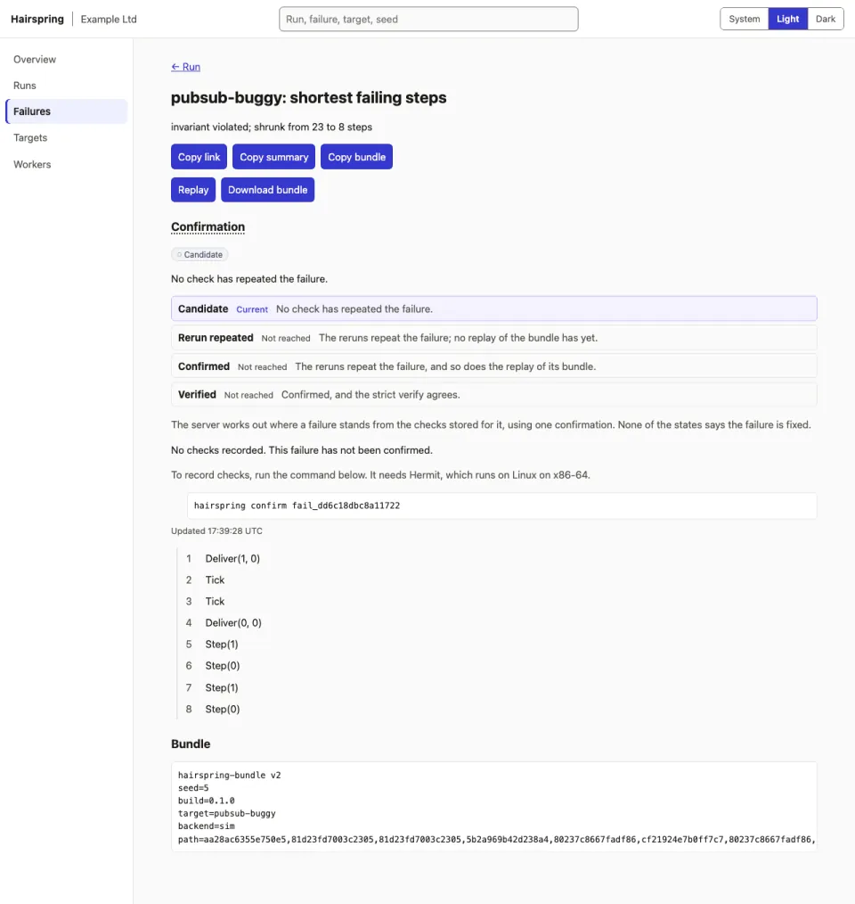
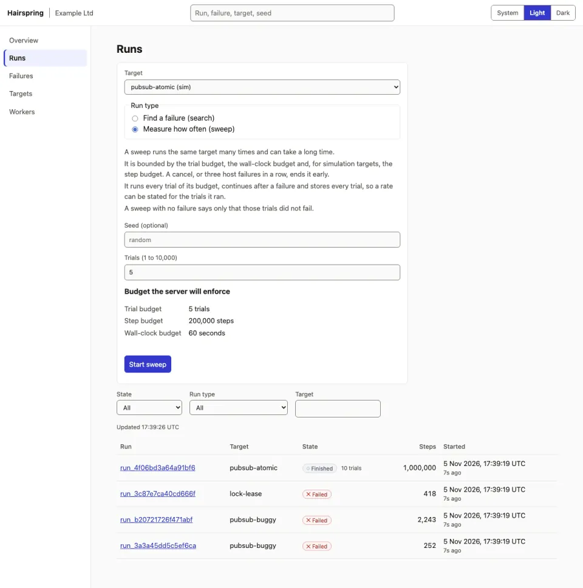
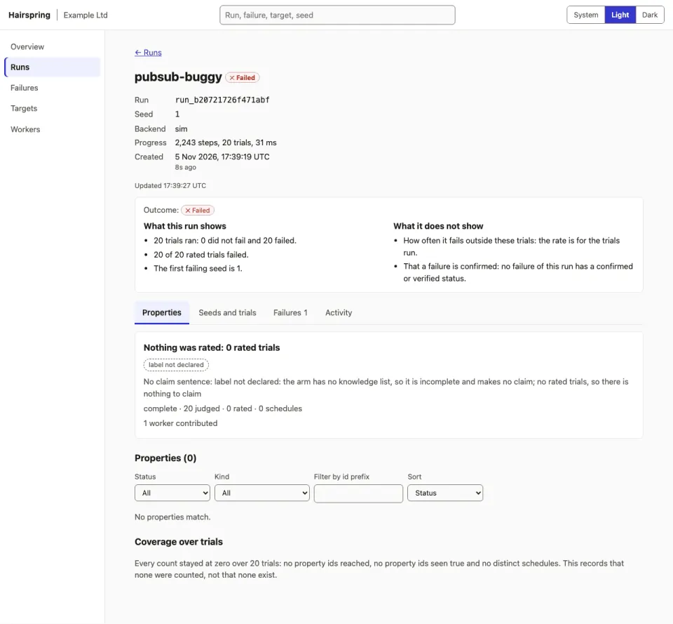

Find concurrency bugs in your own program, then replay them exactly.
Hairspring uses deterministic simulation. It explores many executions of a system, finds the rare interleaving that breaks a property, shrinks it to a short trace, and gives you a bundle that replays the failure.
Experimental, open source (Apache-2.0), and it runs on your laptop or your own servers.
Two ways to run it
Determinism depends on how a system is run, so Hairspring has a backend for each case and says plainly what each one needs.
Simulated and WebAssembly models
You describe the system as a state machine (Rust) or a WebAssembly module. The state is plain data, so runs are deterministic by construction.
- Works on macOS and Linux.
- No special hardware.
- You test a model of your system, not the program itself.
Real Linux programs, under Hermit
Point Hairspring at an unmodified Linux program. It runs the program under Hermit with a different scheduler seed for each trial.
- Needs Linux on x86-64: bare metal, or a VM that passes hardware performance counters through.
- Does not run on macOS or Apple silicon.
- Hermit is a young third-party project, built from a pinned source revision by the installer.
- Experimental. Runs are roughly an order of magnitude slower than native.
Which languages have passed the acceptance test under Hermit, and on exactly what configuration, is in the support matrix. That page is the source of truth.
What you get
Replayable bundles
A failure is saved as a one-file text bundle. Replaying it is checked against the program version it was recorded with.
Shrinking
Delta-debugging reduces a failing run to a 1-minimal trace that keeps the same failure.
Same-seed replay and a determinism check
Every run is driven by a seed. hairspring doctor runs the same seed twice and reports the first divergence.
Sweeps with intervals
A sweep runs the whole trial budget and reports violations out of rated trials with a Wilson 95% interval. Timeouts are reported as inconclusive and are never counted as passes.
A confirmation ladder
A failure moves from candidate to rerun repeated, confirmed and verified as checks are recorded. Confirming needs the process backend. None of the steps says a failure is fixed.
Web UI
Runs, failures, targets and workers in a browser, served by hairspring serve, with light and dark themes.
REST and live events
The same service the CLI and UI use is available over HTTP, with server-sent events for live runs.
MCP server
An MCP server for AI agents. Text that comes from the system under test is sanitised and framed as untrusted data.
GitHub Action
Run simulation and WebAssembly targets in CI, with SARIF findings and the bundles kept as an artifact.
A few options (for example hairspring gc and hairspring test --sweep --confirm) are only in builds newer than the v0.1-RC1 pre-release. Upgrading lists the differences.
Try it in two minutes
This uses the built-in simulation targets, so it works on macOS (Apple silicon) and Linux x86-64 with no other setup. The installer downloads the pre-release binary and checks its sha256 against the release’s SHA256SUMS before installing it.
1. Install
git clone https://github.com/spiculedata/hairspring && cd hairspring
bash scripts/install.sh --version v0.1-RC1
export PATH="$HOME/.local/bin:$PATH"The installer ends by running hairspring doctor. Part of what it prints (abridged: the download and install-path lines are left out):
sha256 verified: 1b1dcc8fd0ec37ca1922fcf12a22fff7ad32cdb26b0f7ccacfd63a12d7dc4204
version: hairspring 0.1.0
running: hairspring doctor
lock-lease: deterministic over 8 seeds x 200 steps
pubsub-atomic: deterministic over 8 seeds x 200 steps
pubsub-buggy: deterministic over 8 seeds x 200 stepsThat hash is the macOS arm64 binary. To build from source instead, use bash scripts/install.sh with no --version; it needs a Rust toolchain.
2. Find a bug and shrink it
pubsub-buggy is a built-in model of an at-least-once consumer that can apply a message twice.
$ hairspring test pubsub-buggy --seed 5
hairspring: exploring pubsub-buggy (seed 5)
FAILED pubsub-buggy (sim)
invariant violated; shrunk from 23 to 8 steps
steps (8):
1. Deliver(1, 0)
2. Tick
3. Tick
4. Deliver(0, 0)
5. Step(1)
6. Step(0)
7. Step(1)
8. Step(0)
bundle:
hairspring-bundle v2
seed=5
build=0.1.0
target=pubsub-buggy
backend=sim
path=aa28ac6355e750e5,81d23fd7003c2305,81d23fd7003c2305,5b2a969b42d238a4,80237c8667fadf86,cf21924e7b0ff7c7,80237c8667fadf86,cf21924e7b0ff7c7
bundle written: .hairspring/bundles/pubsub-buggy-3893b41f.hairspring (replay with `hairspring replay .hairspring/bundles/pubsub-buggy-3893b41f.hairspring`)The command exits 1 because a property was violated. The bundle file name includes a hash, so yours may differ from this one.
3. Replay it
$ hairspring replay .hairspring/bundles/pubsub-buggy-3893b41f.hairspring
replaying 8 steps on target `pubsub-buggy` (backend sim)
1. Deliver(1, 0)
2. Tick
3. Tick
4. Deliver(0, 0)
5. Step(1)
6. Step(0)
7. Step(1)
8. Step(0)
reproduced: the property is still violatedIt exits 1 while the bug exists. Run hairspring serve and open http://127.0.0.1:7878 to see the web UI. It listens on loopback only unless you configure tokens.
That output came from the v0.1-RC1 macOS binary. To run your own software, see the wiki (Installation, Your first run, Running your own software) and the quickstart, which covers the Hermit steps for Linux.
The web UI
Screenshots taken against a scratch server holding runs of the built-in simulation targets. They follow your light or dark setting.



Honest limits
- Experimental. APIs and the bundle format will change.
- Not a multi-machine simulator. It does not simulate several machines or a network between them.
- Real-program runs need hardware performance counters and Linux on x86-64. macOS has no system-level determinism and Apple silicon cannot run Hermit.
- Hermit is a third-party project we do not control. Review it before running it on anything important.
- The host is part of the program. Under Hermit, host files and environment can act as hidden inputs;
hairspring doctorhelps detect this, and it is probabilistic for in-process leaks, so check several seeds. - A pass is not a proof. It says only that the seeds you ran did not fail. Rates are reported with intervals, and inconclusive trials are never counted as passes.
- Languages: the support matrix says what has been tested and on what. We make no claim beyond it.
- Security: if you run a server, read the security policy first. The remote worker protocol and the database speak plain TCP and HTTP, so use a private network or a TLS proxy.
The measurements behind these statements are in docs/determinism.md.
Links
- Wiki
- A beginner’s guide: install, first run, running your own software, troubleshooting.
- Documentation
- Quickstart, determinism, support matrix, CI, HTTP API, deploying a server, upgrading
- Releases
- Pre-release binaries with checksums.
- Questions and bugs
- Open an issue. Include the output of
hairspring --versionanduname -a. - Security
- Security policy. Report vulnerabilities privately, not in a public issue.
- Contributing
- Contributing guide. Contributions use a Developer Certificate of Origin sign-off.
- Licence
- Apache-2.0
- Source
- github.com/spiculedata/hairspring